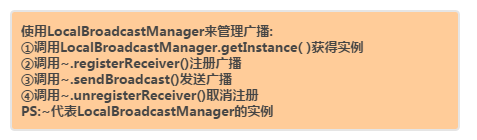
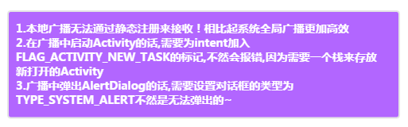

本節の導入：
前節では、BroadcastReceiverについて初歩のな理解を得ました。ブロードキャストには標準ブロードキャストと順序付きブロードキャストの2種類があること、ブロードキャストレシーバーを動的または静的に登録できること、システムブロードキャストを監視できること、自分でブロードキャストを送信できることを知り、基本的なニーズは満たせています～しかし、これまでに書いたブロードキャストはすべてグローバルブロードキャストです！つまり、私たちのアプリが送信したブロードキャストは他のアプリも受信でき、他のアプリが送信したブロードキャストを私たちのアプリも受信できてしまうため、セキュリティ上の問題を引き起こしやすくなります。そこで、Androidにはローカルブロードキャストの仕組みが用意されており、この仕組みを使って送信されたブロードキャストはアプリ内部でのみ伝播し、ブロードキャストレシーバーも自分のアプリが送信したブロードキャストしか受信できません！
1.ローカルブロードキャスト
1）コアとなる使い方：

PS：ローカルブロードキャストは静的登録方式では受信できません。システムのグローバルブロードキャストに比べてより効率的です。
2）注意事項：

3）コード例（別の端末でログインするとユーザーを強制ログアウトさせる）：
WeChatのように、実行中のアプリで別のスマホを使って自分のアカウントに再度ログインすると、先ほどのアプリは「アカウントが別の端末でログインされました」と通知し、開いているすべてのActivityを閉じてログインページに戻ります～
それでは、簡単な例を作ってみましょう：
実行結果のスクリーンショット：

コード実装：
Step 1：すべてのActivityを閉じるActivityCollectorを準備します。ここでは前にActivityの章で提供したものを使います！
ActivityCollector.java
public class ActivityCollector {
private static List<Activity> activities = new ArrayList<Activity>();
public static void addActivity(Activity activity) {
activities.add(activity);
}
public static void removeActivity(Activity activity) {
activities.remove(activity);
}
public static void finishAll() {
for (Activity activity : activities) {
if (!activity.isFinishing()) {
activity.finish();
}
}
}
}
Step 2：まず継承用の簡単なBaseActivityを書き、次にログイン画面を書きます！
public class BaseActivity extends AppCompatActivity {
@Override
protected void onCreate(Bundle savedInstanceState) {
super.onCreate(savedInstanceState);
ActivityCollector.addActivity(this);
}
@Override
protected void onDestroy() {
super.onDestroy();
ActivityCollector.removeActivity(this);
}
}
LoginActivity.java:
public class LoginActivity extends BaseActivity implements View.OnClickListener{
private SharedPreferences pref;
private SharedPreferences.Editor editor;
private EditText edit_user;
private EditText edit_pawd;
private Button btn_login;
@Override
protected void onCreate(Bundle savedInstanceState) {
super.onCreate(savedInstanceState);
setContentView(R.layout.activity_login);
pref = PreferenceManager.getDefaultSharedPreferences(this);
bindViews();
}
private void bindViews() {
edit_user = (EditText) findViewById(R.id.edit_user);
edit_pawd = (EditText) findViewById(R.id.edit_pawd);
btn_login = (Button) findViewById(R.id.btn_login);
btn_login.setOnClickListener(this);
}
@Override
protected void onStart() {
super.onStart();
if(!pref.getString("user","").equals("")){
edit_user.setText(pref.getString("user",""));
edit_pawd.setText(pref.getString("pawd",""));
}
}
@Override
public void onClick(View v) {
String user = edit_user.getText().toString();
String pawd = edit_pawd.getText().toString();
if(user.equals("123")&&pawd.equals("123")){
editor = pref.edit();
editor.putString("user", user);
editor.putString("pawd", pawd);
editor.commit();
Intent intent = new Intent(LoginActivity.this, MainActivity.class);
startActivity(intent);
Toast.makeText(LoginActivity.this,"哟，竟然蒙对了~",Toast.LENGTH_SHORT).show();
finish();
}else{
Toast.makeText(LoginActivity.this,"这么简单都输出，脑子呢？",Toast.LENGTH_SHORT).show();
}
}
}
Step 3：BroadcastReceiverを自作し、onReceive内でダイアログを表示する操作と、ログインページを起動する処理を行います：MyBcReceiver.java
public class MyBcReceiver extends BroadcastReceiver {
@Override
public void onReceive(final Context context, Intent intent) {
AlertDialog.Builder dialogBuilder = new AlertDialog.Builder(context);
dialogBuilder.setTitle("警告：");
dialogBuilder.setMessage("您的账号在别处登录，请重新登陆~");
dialogBuilder.setCancelable(false);
dialogBuilder.setPositiveButton("确定",
new DialogInterface.OnClickListener() {
@Override
public void onClick(DialogInterface dialog, int which) {
ActivityCollector.finishAll();
Intent intent = new Intent(context, LoginActivity.class);
intent.addFlags(Intent.FLAG_ACTIVITY_NEW_TASK);
context.startActivity(intent);
}
});
AlertDialog alertDialog = dialogBuilder.create();
alertDialog.getWindow().setType(
WindowManager.LayoutParams.TYPE_SYSTEM_ALERT);
alertDialog.show();
}
}
AndroidManifest.xmlにシステムダイアログの権限を追加するのを忘れないでください：< uses-permission android:name="android.permission.SYSTEM_ALERT_WINDOW" />
Step 4：MainActivityでlocalBroadcastManagerをインスタンス化し、それを使って関連操作を行います。また、破棄時にはunregisterReceiverを忘れないように注意してください！
MainActivity.java
public class MainActivity extends BaseActivity {
private MyBcReceiver localReceiver;
private LocalBroadcastManager localBroadcastManager;
private IntentFilter intentFilter;
@Override
protected void onCreate(Bundle savedInstanceState) {
super.onCreate(savedInstanceState);
setContentView(R.layout.activity_main);
localBroadcastManager = LocalBroadcastManager.getInstance(this);
//初始化广播接收者，设置过滤器
localReceiver = new MyBcReceiver();
intentFilter = new IntentFilter();
intentFilter.addAction("com.jay.mybcreceiver.LOGIN_OTHER");
localBroadcastManager.registerReceiver(localReceiver, intentFilter);
Button btn_send = (Button) findViewById(R.id.btn_send);
btn_send.setOnClickListener(new View.OnClickListener() {
@Override
public void onClick(View v) {
Intent intent = new Intent("com.jay.mybcreceiver.LOGIN_OTHER");
localBroadcastManager.sendBroadcast(intent);
}
});
}
@Override
protected void onDestroy() {
super.onDestroy();
localBroadcastManager.unregisterReceiver(localReceiver);
}
}
はい、こんなに簡単です。Activityの登録を忘れないでくださいね～
2.Android 4.3以上のバージョンで起動時ブロードキャストを監視する問題の解決：
Android 4.3以上のバージョンでは、アプリをSDカードにインストールすることができます。ご存知のとおり、システムは起動してから少し時間が経ってからSDカードをマウントするため、このブロードキャストをアプリが監視できない可能性があります！そのため、起動時ブロードキャストとSDカードマウントブロードキャストの両方を監視する必要があります！
また、SDカードを搭載していないスマホもあるため、この2つのブロードキャスト監視を同じintent-filterに書くことはできず、2つに分けて書く必要があります。設定コードは以下のとおりです：
<receiver android:name=".MyBroadcastReceiver">
<intent-filter>
<action android:name="android.intent.action.BOOT_COMPLETED"/>
</intent-filter>
<intent-filter>
<action android:name="ANDROID.INTENT.ACTION.MEDIA_MOUNTED"/>
<action android:name="ANDROID.INTENT.ACTION.MEDIA_UNMOUNTED"/>
<data android:scheme="file"/>
</intent-filter>
</receiver>
3.よく使われるシステムブロードキャストのまとめ：
最後に、普段使う可能性があるシステムブロードキャストをいくつか紹介します：
intent.action.AIRPLANE_MODE; //关闭或打开飞行模式时的广播 Intent.ACTION_BATTERY_CHANGED; //充电状态，或者电池的电量发生变化 //电池的充电状态、电荷级别改变，不能通过组建声明接收这个广播，只有通过Context.registerReceiver()注册 Intent.ACTION_BATTERY_LOW; //表示电池电量低 Intent.ACTION_BATTERY_OKAY; //表示电池电量充足，即从电池电量低变化到饱满时会发出广播 Intent.ACTION_BOOT_COMPLETED; //在系统启动完成后，这个动作被广播一次（只有一次）。 Intent.ACTION_CAMERA_BUTTON; //按下照相时的拍照按键(硬件按键)时发出的广播 Intent.ACTION_CLOSE_SYSTEM_DIALOGS; //当屏幕超时进行锁屏时,当用户按下电源按钮,长按或短按(不管有没跳出话框)，进行锁屏时,android系统都会广播此Action消息 Intent.ACTION_CONFIGURATION_CHANGED; //设备当前设置被改变时发出的广播(包括的改变:界面语言，设备方向，等，请参考Configuration.java) Intent.ACTION_DATE_CHANGED; //设备日期发生改变时会发出此广播 Intent.ACTION_DEVICE_STORAGE_LOW; //设备内存不足时发出的广播,此广播只能由系统使用，其它APP不可用？ Intent.ACTION_DEVICE_STORAGE_OK; //设备内存从不足到充足时发出的广播,此广播只能由系统使用，其它APP不可用？ Intent.ACTION_DOCK_EVENT; // //发出此广播的地方frameworks\base\services\java\com\android\server\DockObserver.java Intent.ACTION_EXTERNAL_APPLICATIONS_AVAILABLE; ////移动APP完成之后，发出的广播(移动是指:APP2SD) Intent.ACTION_EXTERNAL_APPLICATIONS_UNAVAILABLE; //正在移动APP时，发出的广播(移动是指:APP2SD) Intent.ACTION_GTALK_SERVICE_CONNECTED; //Gtalk已建立连接时发出的广播 Intent.ACTION_GTALK_SERVICE_DISCONNECTED; //Gtalk已断开连接时发出的广播 Intent.ACTION_HEADSET_PLUG; //在耳机口上插入耳机时发出的广播 Intent.ACTION_INPUT_METHOD_CHANGED; //改变输入法时发出的广播 Intent.ACTION_LOCALE_CHANGED; //设备当前区域设置已更改时发出的广播 Intent.ACTION_MANAGE_PACKAGE_STORAGE; // Intent.ACTION_MEDIA_BAD_REMOVAL; //未正确移除SD卡(正确移除SD卡的方法:设置--SD卡和设备内存--卸载SD卡)，但已把SD卡取出来时发出的广播 //广播：扩展介质（扩展卡）已经从 SD 卡插槽拔出，但是挂载点 (mount point) 还没解除 (unmount) Intent.ACTION_MEDIA_BUTTON; //按下"Media Button" 按键时发出的广播,假如有"Media Button" 按键的话(硬件按键) Intent.ACTION_MEDIA_CHECKING; //插入外部储存装置，比如SD卡时，系统会检验SD卡，此时发出的广播? Intent.ACTION_MEDIA_EJECT; //已拔掉外部大容量储存设备发出的广播（比如SD卡，或移动硬盘）,不管有没有正确卸载都会发出此广播? //广播：用户想要移除扩展介质（拔掉扩展卡）。 Intent.ACTION_MEDIA_MOUNTED; //插入SD卡并且已正确安装（识别）时发出的广播 //广播：扩展介质被插入，而且已经被挂载。 Intent.ACTION_MEDIA_NOFS; // Intent.ACTION_MEDIA_REMOVED; //外部储存设备已被移除，不管有没正确卸载,都会发出此广播？ // 广播：扩展介质被移除。 Intent.ACTION_MEDIA_SCANNER_FINISHED; //广播：已经扫描完介质的一个目录 Intent.ACTION_MEDIA_SCANNER_SCAN_FILE; // Intent.ACTION_MEDIA_SCANNER_STARTED; //广播：开始扫描介质的一个目录 Intent.ACTION_MEDIA_SHARED; // 广播：扩展介质的挂载被解除 (unmount)，因为它已经作为 USB 大容量存储被共享。 Intent.ACTION_MEDIA_UNMOUNTABLE; // Intent.ACTION_MEDIA_UNMOUNTED // 广播：扩展介质存在，但是还没有被挂载 (mount)。 Intent.ACTION_NEW_OUTGOING_CALL; Intent.ACTION_PACKAGE_ADDED; //成功的安装APK之后 //广播：设备上新安装了一个应用程序包。 //一个新应用包已经安装在设备上，数据包括包名（最新安装的包程序不能接收到这个广播） Intent.ACTION_PACKAGE_CHANGED; //一个已存在的应用程序包已经改变，包括包名 Intent.ACTION_PACKAGE_DATA_CLEARED; //清除一个应用程序的数据时发出的广播(在设置－－应用管理－－选中某个应用，之后点清除数据时?) //用户已经清除一个包的数据，包括包名（清除包程序不能接收到这个广播） Intent.ACTION_PACKAGE_INSTALL; //触发一个下载并且完成安装时发出的广播，比如在电子市场里下载应用？ // Intent.ACTION_PACKAGE_REMOVED; //成功的删除某个APK之后发出的广播 //一个已存在的应用程序包已经从设备上移除，包括包名（正在被安装的包程序不能接收到这个广播） Intent.ACTION_PACKAGE_REPLACED; //替换一个现有的安装包时发出的广播（不管现在安装的APP比之前的新还是旧，都会发出此广播？） Intent.ACTION_PACKAGE_RESTARTED; //用户重新开始一个包，包的所有进程将被杀死，所有与其联系的运行时间状态应该被移除，包括包名（重新开始包程序不能接收到这个广播） Intent.ACTION_POWER_CONNECTED; //插上外部电源时发出的广播 Intent.ACTION_POWER_DISCONNECTED; //已断开外部电源连接时发出的广播 Intent.ACTION_PROVIDER_CHANGED; // Intent.ACTION_REBOOT; //重启设备时的广播 Intent.ACTION_SCREEN_OFF; //屏幕被关闭之后的广播 Intent.ACTION_SCREEN_ON; //屏幕被打开之后的广播 Intent.ACTION_SHUTDOWN; //关闭系统时发出的广播 Intent.ACTION_TIMEZONE_CHANGED; //时区发生改变时发出的广播 Intent.ACTION_TIME_CHANGED; //时间被设置时发出的广播 Intent.ACTION_TIME_TICK; //广播：当前时间已经变化（正常的时间流逝）。 //当前时间改变，每分钟都发送，不能通过组件声明来接收，只有通过Context.registerReceiver()方法来注册 Intent.ACTION_UID_REMOVED; //一个用户ID已经从系统中移除发出的广播 // Intent.ACTION_UMS_CONNECTED; //设备已进入USB大容量储存状态时发出的广播？ Intent.ACTION_UMS_DISCONNECTED; //设备已从USB大容量储存状态转为正常状态时发出的广播？ Intent.ACTION_USER_PRESENT; // Intent.ACTION_WALLPAPER_CHANGED; //设备墙纸已改变时发出的广播